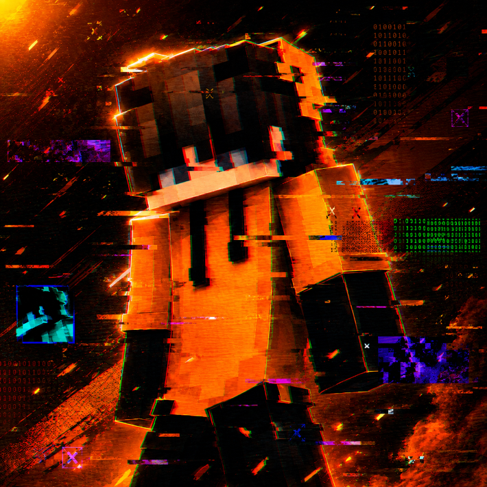

Ce jeu a été développé par incognitodu78 en Python 3.11.
Le joueur peut rencontrer des bugs, voici quelques bugs découvert pendant son dévelloppement : La vie du joueur baisse tout le temps sans se faire attaquer // Les monstres ne se déplacent pas même quand le joueur à parlé au PNJ.
Si vous rencontrez de nouveau bug, merci de le signaler au develloppeur !
Durée du jeu (estimé) : 5 - 10 minutes



Version du site : 1.4
Version du jeu : 1.0